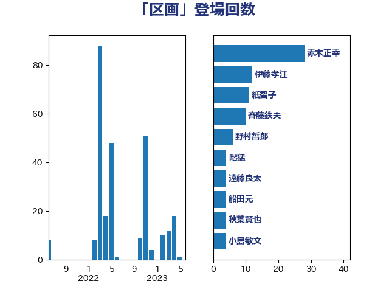

単語「区画」

| 赤木正幸 | 日本維新の会 | 28 回 |
| 伊藤孝江 | 公明党 | 12 回 |
| 紙智子 | 日本共産党 | 11 回 |
| 斉藤鉄夫 | 公明党 | 10 回 |
| 野村哲郎 | 自由民主党 | 6 回 |
| 階猛 | 立憲民主党 | 4 回 |
| 遠藤良太 | 日本維新の会 | 4 回 |
| 船田元 | 自由民主党 | 4 回 |
| 秋葉賢也 | 自由民主党 | 4 回 |
| 小島敏文 | 自由民主党 | 4 回 |
| 宮崎雅夫 | 自由民主党 | 4 回 |
| 長谷川淳二 | 自由民主党 | 3 回 |
| 鈴木俊一 | 自由民主党 | 3 回 |
| 野中厚 | 自由民主党 | 3 回 |
| 西銘恒三郎 | 自由民主党 | 3 回 |
| 中村裕之 | 自由民主党 | 3 回 |
| 鬼木誠 | 立憲民主党 | 2 回 |
| 高橋千鶴子 | 日本共産党 | 2 回 |
| 輿水恵一 | 公明党 | 2 回 |
| 篠原孝 | 立憲民主党 | 2 回 |
| 稲津久 | 公明党 | 2 回 |
| 浜田靖一 | 自由民主党 | 2 回 |
| 和田有一朗 | 日本維新の会 | 2 回 |
| 古川康 | 自由民主党 | 2 回 |
| 中川郁子 | 自由民主党 | 2 回 |
| 高木かおり | 日本維新の会 | 1 回 |
| 音喜多駿 | 日本維新の会 | 1 回 |
| 長友慎治 | 国民民主党 | 1 回 |
| 進藤金日子 | 自由民主党 | 1 回 |
| 芳賀道也 | 国民民主党 | 1 回 |
| 舞立昇治 | 自由民主党 | 1 回 |
| 簗和生 | 自由民主党 | 1 回 |
| 福島伸享 | 無所属 | 1 回 |
| 漆間譲司 | 日本維新の会 | 1 回 |
| 渡辺創 | 立憲民主党 | 1 回 |
| 津島淳 | 自由民主党 | 1 回 |
| 武部新 | 自由民主党 | 1 回 |
| 木村英子 | れいわ新選組 | 1 回 |
| 新藤義孝 | 自由民主党 | 1 回 |
| 徳永久志 | 立憲民主党 | 1 回 |
| 後藤茂之 | 自由民主党 | 1 回 |
| 後藤祐一 | 立憲民主党 | 1 回 |
| 広瀬めぐみ | 自由民主党 | 1 回 |
| 岸田文雄 | 自由民主党 | 1 回 |
| 岡田直樹 | 自由民主党 | 1 回 |
| 山田俊男 | 自由民主党 | 1 回 |
| 山添拓 | 日本共産党 | 1 回 |
| 山崎誠 | 立憲民主党 | 1 回 |
| 山口壯 | 自由民主党 | 1 回 |
| 尾崎正直 | 自由民主党 | 1 回 |
| 小西洋之 | 立憲民主党 | 1 回 |
| 小沢雅仁 | 立憲民主党 | 1 回 |
| 小池晃 | 日本共産党 | 1 回 |
| 寺田稔 | 自由民主党 | 1 回 |
| 宮崎政久 | 自由民主党 | 1 回 |
| 奥野総一郎 | 立憲民主党 | 1 回 |
| 大西健介 | 立憲民主党 | 1 回 |
| 大岡敏孝 | 自由民主党 | 1 回 |
| 塩川鉄也 | 日本共産党 | 1 回 |
| 堤かなめ | 立憲民主党 | 1 回 |
| 堂故茂 | 自由民主党 | 1 回 |
| 城井崇 | 立憲民主党 | 1 回 |
| 国定勇人 | 自由民主党 | 1 回 |
| 北神圭朗 | 無所属 | 1 回 |
| 加藤竜祥 | 自由民主党 | 1 回 |
| 倉林明子 | 日本共産党 | 1 回 |
| 伊藤渉 | 公明党 | 1 回 |
| 中川貴元 | 自由民主党 | 1 回 |
| 下野六太 | 公明党 | 1 回 |
| 上月良祐 | 自由民主党 | 1 回 |
| 三浦信祐 | 公明党 | 1 回 |